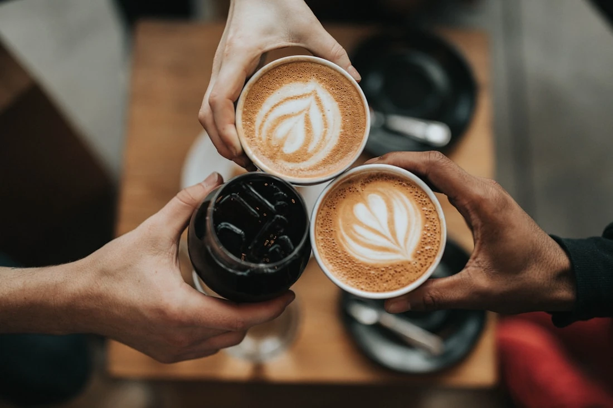
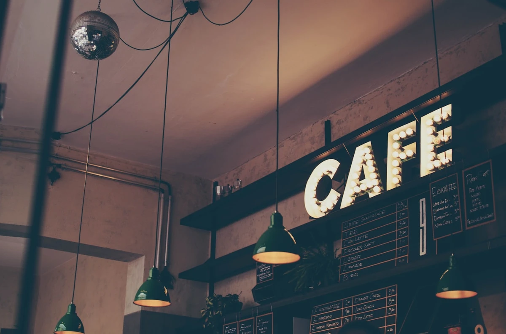
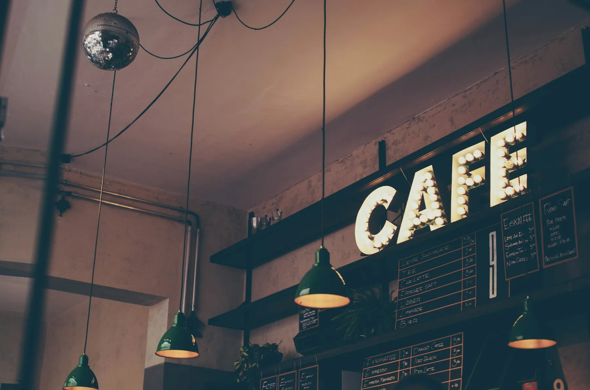

Independent Coffee House Est.
2018
Good coffee
deserves a
kind of morning.
Thoughtfully sourced beans, quietly bold espresso, handmade pastries, and a room made for staying a little longer.
Freshly brewed every morning



Specialty Coffee
Fresh Pastries
Slow Mornings
Handcrafted Drinks
Local Community


This
Week's Pour
The house latte, reimagined.
A chocolate-forward seasonal espresso, steamed with silky whole milk and finished with our house cacao dust.
Seasonal
Single Origin
Barista Pick
Signatures
A few things
we do differently.
Seasonal recipes, careful ingredients, and enough personality to make the second order inevitable.

01
Signature
Stackly Espresso

02
Morning
Butter Croissant

03
Filter
Today's Pour Over

04
Cold
Lavender Cold Brew
Why Stackly Brew
Good coffee is a process.
We obsess over the small decisions because those are the things you taste.
01
Origin
We look for character, not just scores.
We work with coffees that have something interesting to say in the cup.
02
Roast
We roast to reveal, never to hide.
Our profiles are designed around sweetness, clarity and balance.
03
Brew
Precision without the performance.
Every recipe is repeatable, but every cup still feels handmade.
04
Serve
The final ingredient is hospitality.
We want you to leave happier than you arrived. Simple as that.
Behind The Bar
Meet the people
behind your cup.
Curious humans, serious about coffee, and very opinionated about grinders.

Head Barista
Aria

Roaster
Noah

Cafe Host
Mira
Your
Visit
Come in.
Take your time.
There is no right way to spend time at Stackly Brew. Here is one possible version.
Walk through the door.
Find a sunny table, a quiet corner, or a seat by the bar.
Choose your cup.
Ask us what is tasting great today. We are happy to guide you.
Watch it come together.
Our bar is intentionally open. Coffee should be something you can see being made.
Stay for another.
Because the first cup was obviously just research.
By The
Numbers
A lot of coffee.
A lot of love.
0
Cups served
And we still get excited about the first one every morning.
0
Coffee origins
Rotating through the year for a broader coffee experience.
0
Years brewing
Learning, adjusting, and drinking an unreasonable amount of espresso.
0.0
Guest rating
Based on hundreds of reviews from our wonderful neighborhood.
Kind Words
People say
nice things.
The best part of making coffee is seeing where it takes people.
“
The kind of cafe where one coffee somehow becomes three hours.
— Riya
Regular
“
The espresso is excellent, but the atmosphere is what keeps me coming back.
— Daniel
Guest
“
Finally found a place that takes coffee seriously without taking itself too seriously.
— Anika
Neighbor
“
The lavender cold brew is dangerously good.
— Kabir
Regular

Come Say Hello
Find your table.
Address
18 Willow Street, The Corner District
Hours
Mon–Fri 7:00–20:00
Sat–Sun 8:00–21:00
Phone
+91 90000 00000

See You
Soon
Make room
for a good cup.
Come for the coffee. Stay for the conversation, the quiet, the music, or absolutely nothing at all.